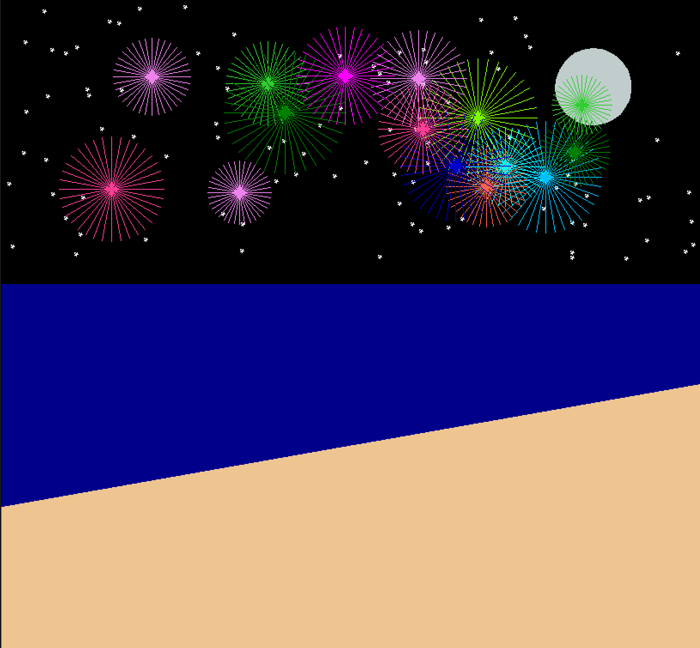
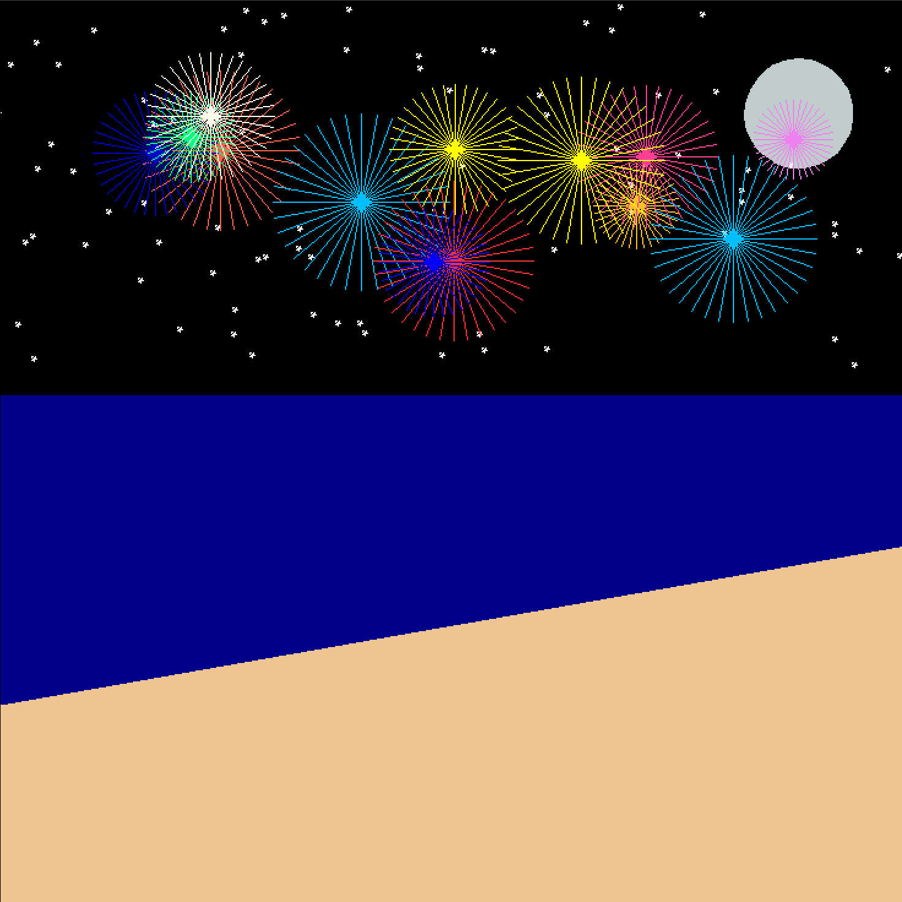

This project demonstrates the use of basic turtle graphics to create a simple scene. It served as an introduction
to python programming and showcases what one can do with simple instructions to a computer. My scene was a beach
on the ocean at night with fireworks blasting in the midnight sky.
The main area I'm proud of with this project is the randomization of the fireworks and stars. No two scenes will
be the same when the program is run, with the placement of the stars, placement of the fireworks, and the colors
and size of the fireworks all being based on a random number generator. Importantly, they are still prevented
from going off the screen and or on top of the moon (for stars) via constraints on the random module.
These are two of the functions I created for this project. The first one draws a single firework based on
parameters for coordinates, size, and color. The second function calls the first one between 12 and 18 times
to put on a fireworks show for the user. It uses random.int() and random.choice() to generate unique
parameters for each firework.
• x, y: Starting position coordinates for the firework
• size: Control the size of the firework
• color: The color of the firework, allowing for a variety of effects to be created
• min_size: The minimum size of a firework
• max_size: The maximum size of a firework
# Draws a single firework with parameters for coordinate, size, and color.
def draw_firework(x, y, size, color):
penup()
pencolor(color)
goto(x, y)
pendown()
for i in range(36):
forward(size)
goto(x, y)
right(10)
# Calls draw_firework() between 12 and 18 times to put on a fireworks show for the user.
def random_fireworks(min_size, max_size):
num_fireworks = random.randint(12, 18)
# List colors[] stores the possible colors for the function to choose randomly from each time it calls draw_firework()
colors = ["yellow", "mediumblue", "orangered", "violet", "maroon", "limegreen", "goldenrod1", "Deepskyblue", "magenta", "turquoise1", "blue", "chartreuse1", "cyan1", "gold", "ivory", "firebrick1", "green", "white", "violetred1", "tomato", "springgreen"]
for i in range(num_fireworks):
size = random.randint(min_size, max_size)
color = random.choice(colors)
x = random_x(-300, 300)
y = random_y(150, 300)
draw_firework(x, y, size, color)


An interesting area to look back upon with this project is how I would have changed it if I were beginning it today. For example, I don't really know why I created entire functions to generate random x and y coordinates, but not color or size. I certainly would have changed the raondom_fireworks() function to take the minimum and maximum fireworks as parameters instead of hardcoding them into the function. I also think I would've added more comments to the code after learning their importance.